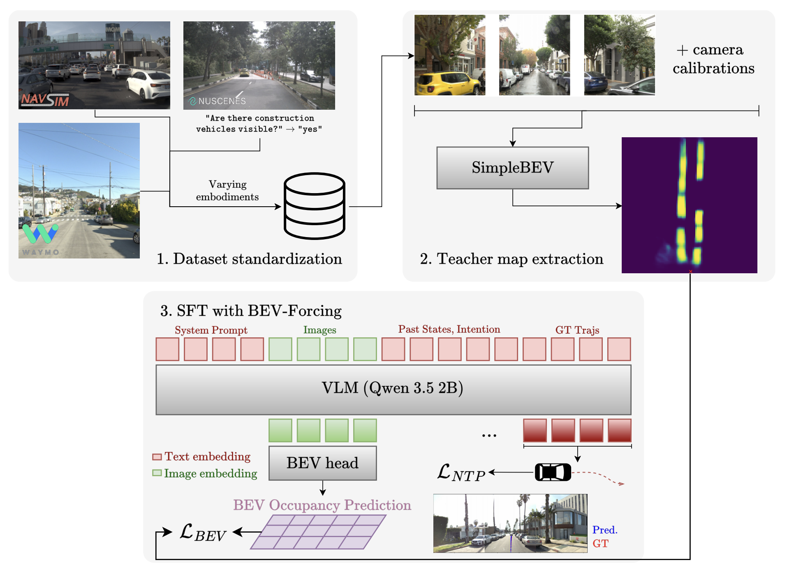

2026

Towards Zero-Shot Transfer Across Embodiments For Driving VLAs
Multi-dataset training and BEV-Forcing for zero-shot transfer of driving vision-language-action models across camera rigs, studying how spatial supervision and training diversity affect generalization.